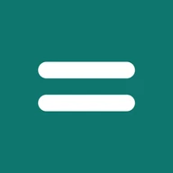

Özet ekranı
Uygulamayı açınca durumun tek bakışta önünde.
- Toplam bakiye, bu ayın geliri, gideri ve kalanı
- Geçen aya göre artış ve azalış
- Bu ay ödenecekler, yaklaşan ve geciken ödemeler

Android uygulaması · ÜcretsizGelir, gider, borç ve ödemelerin tek yerde. Hesabını denk tut.
Banka, nakit ve kartlarındaki bakiyeyi, kira ve fatura gibi düzenli ödemeleri, taksitli borçları ve kime ne kadar borcun olduğunu sade bir uygulamada takip et. Hesap açmak yok; verilerin yalnızca senin telefonunda.
Özellikler
Günlük harcamadan uzun vadeli taksitlere kadar bütün para akışın tek uygulamada.
Uygulamayı açınca durumun tek bakışta önünde.
Paranın nereye gittiğini halka grafikte gör.
Harcamalarını ve gelirlerini saniyeler içinde kaydet.
Nakit, banka hesabı, kredi kartı… istediğin kadar hesap.
Market, kira, faturalar, maaş… 17 hazır kategoriyle başla.
Kira, fatura, abonelik ve düzenli gelirlerin takvimde.
Ödeme günü yaklaşınca telefonuna bildirim gelir.
Kime ne kadar borcun, kimden ne kadar alacağın var?
Telefonun kaybolsa ya da değişse de verilerin güvende.
Hesap yok, sunucu yok, reklam ve takip yok.
İnternet yokken de her şey çalışır; bekleme yok.
Baştan başlamak istersen tek adımda her şeyi sil.
Ekranlar


Kurulum
Denk-android.apk dosyasını telefonuna indir. Android 7.0 ve üzeri tüm telefonlarda çalışır.
İndirilen dosyaya dokun. Telefon "bilinmeyen kaynaklardan yükleme" izni isterse tarayıcına bu izni ver ve "Yükle"ye bas.
Denk'i aç; Nakit hesabı ve 17 kategori hazır gelir. İstersen Ayarlar'dan Google Drive yedeğini aç.
Denk'te hesap açılmaz ve sunucu yoktur. Kayıtların telefonundaki veritabanında durur; yedeklemeyi açarsan bir kopyası doğrudan kendi Google Drive'ına gider. Biz hiçbir verini görmeyiz, toplamayız, saklamayız.
SSS
Hayır. Denk tamamen ücretsizdir; reklam, uygulama içi satın alma ya da abonelik yoktur.
Yalnızca telefonunda, Denk'in kendi klasöründeki bir veritabanında. Google Drive yedeğini açarsan bir kopyası Drive'ında yalnızca Denk'in görebildiği gizli bir klasöre yazılır.
Eski telefonda Ayarlar → Google Drive yedeği'ni açman yeterli. Yeni telefonda Denk'i kurup aynı Google hesabıyla bağlan ve listeden son yedeği geri yükle.
Hayır. Kayıt eklemek, takvim ve hatırlatmalar internetsiz çalışır. Bağlantı yalnızca Google Drive'a yedek alırken gerekir.
Hayır. Denk hiçbir bankaya bağlanmaz; kayıtları sen girersin. Banka şifren ya da kart bilgin hiçbir zaman istenmez.
Şimdilik yalnızca Android telefonlar içindir (Android 7.0 ve üzeri).
Denk şu an doğrudan APK olarak dağıtılıyor. Dosya, kaynak koduyla birlikte GitHub'da yayınlanır; her sürüm aynı geliştirici imzasını taşır, böylece güncellemeler mevcut uygulamanın üzerine sorunsuz kurulur.